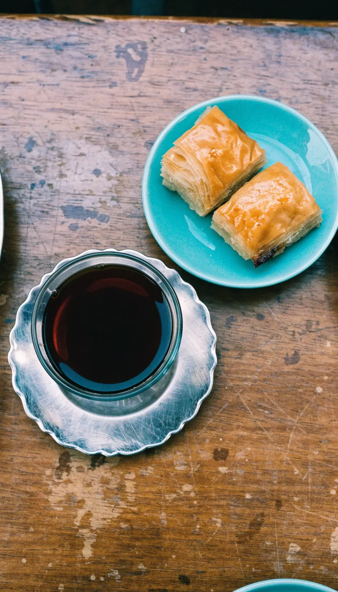
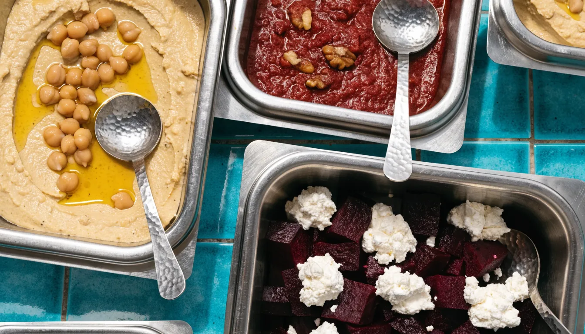
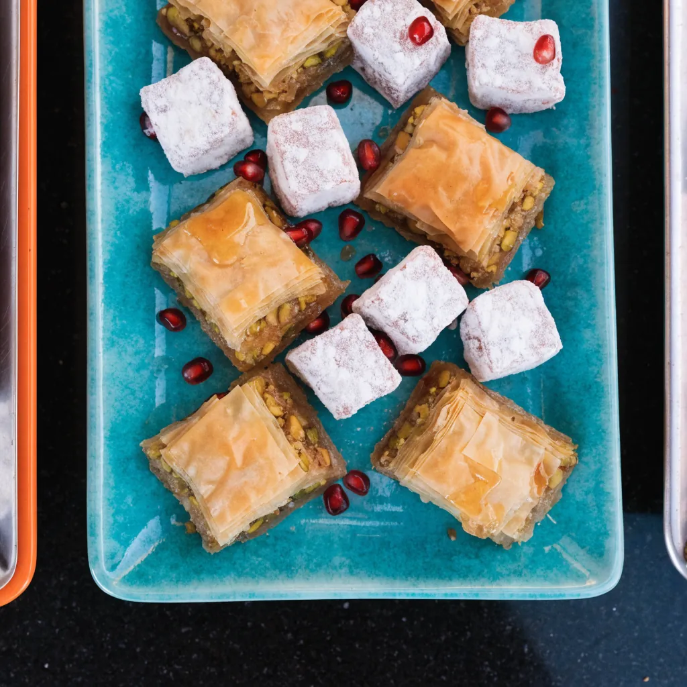
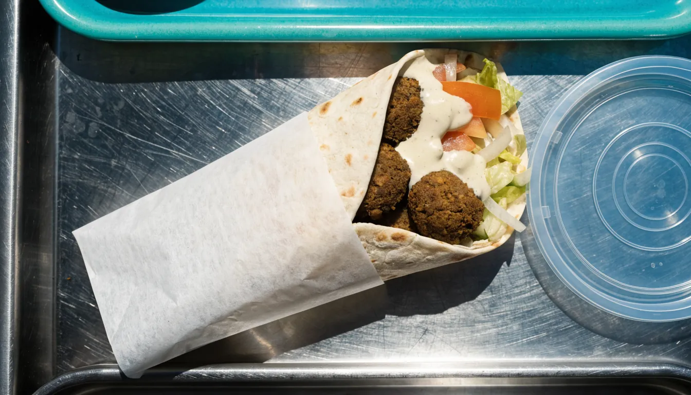

- Falafelaus Kichererbsen
- Rote Beteals Salat
- Hummusmit Olivenöl
- MuhammaraPaprika und Walnuss
Adam Café City
Müggenkampstraße 45, Eimsbüttel
Heute 08–23 Uhr
Frühstück, Mittagstisch, Abendessen. Vor Ort essen oder mitnehmen.
Anrufen040 36940941 Tisch reservierenDer Tag, von acht bis elf
Ab acht gibt es Kaffee und Frühstück, ab Mittag wechselt das Essen jeden Tag, abends wird gegessen, bis 23 Uhr. Jeden Tag gleich, auch sonntags.
Die Auslage
Die Cremes und Salate liegen vorne in der Auslage, jeden Tag frisch angerichtet. Zeigen Sie einfach drauf. Der Mittagstisch wechselt täglich, fragen Sie an der Theke, was heute im Topf ist.
 Mezzeaus der Auslage
Foto: Wessam Deeb · Google Maps
Mezzeaus der Auslage
Foto: Wessam Deeb · Google Maps
 Kartoffelsalatmit Minze
Foto: Adam Café City · Google Maps
Kartoffelsalatmit Minze
Foto: Adam Café City · Google Maps

Teeund Baklava KI-Bild Süßesvom Tablett
Foto: Adam Café City · Google Maps
Süßesvom Tablett
Foto: Adam Café City · Google Maps

Hummusmit Kichererbsen Muhammaramit Walnuss KI-Bild Rollenmit Pistazie
Foto: Adam Café City · Google Maps
Rollenmit Pistazie
Foto: Adam Café City · Google Maps

Desserttellergemischt KI-BildWas es gibt
Eine Auswahl aus der Theke und der Karte. Vieles davon ist vegetarisch.
- Falafelaus Kichererbsen, frisch aus dem Fett
- HummusKichererbsencreme mit Olivenöl
- MuhammaraPaprika und Walnuss
- Rote Beteals Salat aus der Auslage
- Kartoffelsalat mit Minzemit frischen Kräutern
- Fladenbrotzu allen Cremes
- Falafel-Wrapauch zum Mitnehmen
- Gemischter Desserttellerquer durch die Vitrine
- Lokum mit Granatapfelmit Kernen obendrauf
- Baklavamit Pistazie
- Teeschwarz, im Glas
- Kaffeeab acht Uhr
Die ganze Karte liegt vor Ort, Fragen zur syrischen Küche beantworten wir gern.
Anrufen, bestellen, abholen
Sagen Sie uns am Telefon, was Sie möchten, und holen Sie es in der Müggenkampstraße 45 ab. Täglich von 08 bis 23 Uhr.
040 36940941
Falafel-Wrapzum Mitnehmen KI-Bild Draußen sitzenMüggenkampstraße
Foto: Francesca Tintori · Google Maps
Draußen sitzenMüggenkampstraße
Foto: Francesca Tintori · Google Maps